111 年國中教育會考社會試題與答案
這一頁是民國 111 年國中教育會考社會的整份歷屆試題，共 54 題，題目與標準答案出自心測中心 會考歷屆試題（依著作權法 §9，考試試題不受著作權保護），其中 54 題附有詳解。以下逐題列出題幹、選項與答案；要計時作答或記錄成績，請用線上練習。
線上作答這一科 →
全部 54 題
第 1 題
某宗教的全球年度大型集會活動在 2017 年約有 235 萬人參與。表（一）為該年參與者的來源國及其人數，此一宗教活動最可能為下列何者？
表（一）| 國家 | 人數 | 國家 | 人數 |
|---|
| 沙烏地阿拉伯 | 600,108 | 伊朗 | 86,500 |
| 印尼 | 221,000 | 土耳其 | 79,000 |
| 巴基斯坦 | 179,210 | 奈及利亞 | 79,000 |
| 印度 | 170,000 | 阿爾及利亞 | 36,000 |
| 孟加拉 | 127,198 | 摩洛哥 | 31,000 |
| 埃及 | 108,000 | 其他 | 635,106 |
- （A）佛教浴佛節
- （B）印度教大壺節
- （C）伊斯蘭教朝覲
- （D）天主教聖誕彌撒
答案：（C）
詳解與考點
正解：表中沙烏地阿拉伯有 600108 人、印尼 221000 人、巴基斯坦 179210 人、孟加拉 127198 人，均是穆斯林人口眾多的國家；加上集會在沙烏地阿拉伯舉行，最符合伊斯蘭教前往麥加的朝覲，C 為正解。
A：浴佛節與佛教相關，表列主要來源國的宗教人口結構不符。
B：大壺節是印度教重要活動，若為此活動，來源國應更集中於印度教社會，與表中名單不符。
D：聖誕彌撒屬天主教禮儀，無法由以穆斯林人口大國為主的名單解釋。
本題考點：宗教地理——由活動所在地與參與者來源國的宗教人口結構交叉判讀；伊斯蘭教朝覲——麥加位於沙烏地阿拉伯，全球穆斯林可前往朝覲。
第 2 題
臺灣一處具有特殊泥岩惡地景觀的地點，於 2020 年 7 月由地方政府審議通過為地質公園。該地位處板塊交界附近及海岸山脈最南端，泥岩夾雜外來岩塊的地層，為該地質公園主要特色。上述地質公園最可能位於圖（一）中何處？
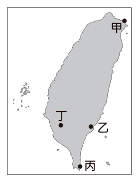
- （A）甲
- （B）乙
- （C）丙
- （D）丁
答案：（B）
詳解與考點
正解：題幹的「海岸山脈最南端」、「板塊交界附近」及「泥岩夾雜外來岩塊」共同指向臺東利吉惡地。利吉地層位於臺灣東南部海岸山脈南端，對應圖中的乙，因此 B 為正解。
A：甲位於東北部，非海岸山脈最南端，錯誤。
C：丙在恆春一帶，雖位於南部，仍不符利吉地層所在的海岸山脈南端，錯誤。
D：丁在中部內陸，位置不符，錯誤。
本題考點：臺灣地質景觀定位——泥岩惡地、外來岩塊與海岸山脈最南端同時出現時，可判斷為臺東利吉地區；地圖定位——須交叉比對地形名稱與區位，不可只憑「南部」作答。
第 3 題
中國的氣候受地形、緯度、距海遠近等因素影響，而有空間上的差異。圖(二)中甲、乙、丙、丁哪一路線夏季氣候的空間變化趨勢，具有明顯的「由溼熱，變乾熱」的特性？
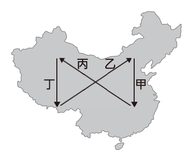
- （A）甲
- （B）乙
- （C）丙
- （D）丁
答案：（C）
詳解與考點
正解：夏季由「溼熱」變「乾熱」，應從東南沿海的高溫多雨區，往西北內陸的高溫少雨區移動。圖中丙由東南指向西北，符合此空間變化，故選 C。
A：甲為南北向路線，主要反映緯度造成的氣溫差異，非東南到西北的乾溼變化。
B：乙的方向不符合由東南沿海往西北內陸的判準。
D：丁也是南北向路線，不能呈現由溼熱轉乾熱的主要趨勢。
本題考點：中國夏季氣候差異——東南沿海受季風影響較溼熱，西北內陸距海較遠而較乾熱；判讀路線時先確認其是否由東南往西北。
第 4 題
根據經濟部水利署的統計，截至2019年底，臺灣40座主要水庫中，淤積率超過30%的共有15座，例如霧社水庫淤積率達74.8%、烏山頭水庫達49.2%，顯示臺灣水庫淤積程度嚴重，影響水庫蓄水功能。下列何項策略最能有效改善上述現象？
- （A）強化集水區崩塌裸露地的植被復育
- （B）擴大在河川下游種植防風林的面積
- （C）減少都市不透水鋪面，增加雨水入滲
- （D）增加地面水源供應，以取代地下水源
答案：（A）
詳解與考點
正解：題幹指出水庫淤積影響蓄水，關鍵在於泥沙主要由上游集水區的水土流失帶入。A 強化集水區崩塌裸露地的植被復育，可固土保水、減少地表沖蝕與入庫泥沙，直接改善淤積，故 A 為正解。
B：河川下游的防風林主要防風，無法減少上游集水區流失並帶入水庫的泥沙。
C：減少都市不透水鋪面可增加雨水入滲、改善都市逕流，與集水區泥沙造成的水庫淤積沒有直接關聯。
D：增加地面水源供應是調整用水來源，不能減少已輸入水庫的泥沙。
本題考點：水庫淤積成因——集水區土壤受沖蝕，泥沙隨水流入水庫；改善判準——要減緩淤積，應優先減少上游裸露地的崩塌與水土流失。
第 5 題
圖（三）為 1980 年代臺灣某雜誌的封底，藉此表達該雜誌社的政治訴求。圖中內容所呈現的訴求，最可能與下列何者有關？
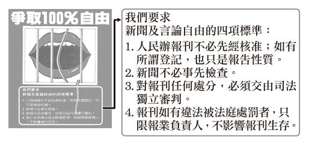
- （A）中央民意代表改選以及總統直選
- （B）政府應該妥善處理「二二八事件」
- （C）政府推行國語運動使得母語式微
- （D）消弭戒嚴體制對人民權利的限制
答案：（D）
詳解與考點
正解：圖中以「爭取100%自由」及新聞、言論自由的四項標準為訴求，並反對事前檢查、主張司法獨立審判，關鍵是人民自由權利受到戒嚴體制限制。消弭戒嚴體制對人民權利的限制，D為正解。
A：中央民意代表改選與總統直選是政治參與制度的議題，圖像聚焦的是新聞與言論自由，錯誤。
B：二二八事件的處理屬歷史真相與受難者平反議題，非圖中的直接訴求，錯誤。
C：母語式微與國語運動關於語言文化，與反對出版審查的主題不同，錯誤。
本題考點：政治圖像判讀——先抓取標語與具體主張，再連結相應的歷史制度；出現新聞、言論、事前檢查與司法獨立時，應判斷為自由權利及解除戒嚴限制的訴求。
第 6 題
圖（四）為中國歷史上某種官方文件的內容，根據圖中內容判斷，當時政府製作此官方文件的主要目的最可能為下列何者？（建初十二年：西元 416 年。）
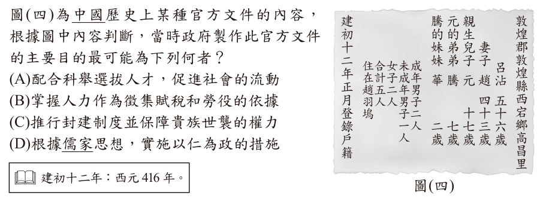
- （A）配合科舉選拔人才，促進社會的流動
- （B）掌握人力作為徵集賦稅和勞役的依據
- （C）推行封建制度並保障貴族世襲的權力
- （D）根據儒家思想，實施以仁為政的措施
答案：（B）
詳解與考點
正解：官方文件逐一登錄家中成員的姓名、性別、年齡及成年男子人數，關鍵是政府藉戶籍掌握人口。古代政府據此徵收賦稅、徵集勞役，所以B為正解。
A：科舉以考試選拔人才，文件內容卻是人口登錄，兩者無直接關係，錯誤。
C：封建制度保障貴族世襲權力，戶籍的功能是管理編戶齊民，不是確認貴族封地或世襲，錯誤。
D：儒家仁政是施政理念，不能說明為何須詳列戶籍人數，錯誤。
本題考點：古代戶籍文書——看見姓名、年齡、性別與戶數等登錄資料，應判斷其用途是人口清查；掌握人力是徵收賦稅與派發勞役的基礎。
第 7 題
「柯因奈語」(Koine)，又稱「通用希臘語」，是大約發源於西元前四世紀的國際性語言。此一語言因某帝國在政治上統一了愛琴海地區各希臘城邦，融合了該地區多種方言發展而成；其後又伴隨帝國對外武力征服，向埃及、西亞等地區擴散傳播，對於往後數百年間科學、文學和宗教的發展影響深遠。上述的「某帝國」，最可能為下列何者？
- （A）波斯帝國
- （B）蒙兀兒帝國
- （C）亞歷山大帝國
- （D）阿茲提克帝國
答案：（C）
詳解與考點
正解：西元前 4 世紀統一希臘城邦，並以武力征服使希臘語傳往埃及與西亞。亞歷山大大帝的擴張符合這些時間與空間線索，柯因奈語也因此廣泛傳播，故選 C。
A：波斯帝國雖與希臘世界互動，卻不符合題幹所述統一希臘城邦後向埃及、西亞擴散希臘語的過程。
B：蒙兀兒帝國是 16 世紀起的印度伊斯蘭帝國，時代與地點皆不合。
D：阿茲提克帝國位於美洲，與希臘城邦及希臘語傳播無關。
本題考點：古代帝國與文化傳播——依年代、統治區域與擴張方向交叉判讀；西元前 4 世紀由希臘向埃及、西亞擴張的線索，指向亞歷山大帝國。
第 8 題
圖(五)是臺灣某考古遺址中，同一文化層出土的四種石器。圖中何者最適合作為判斷該文化層所屬時代的證據？
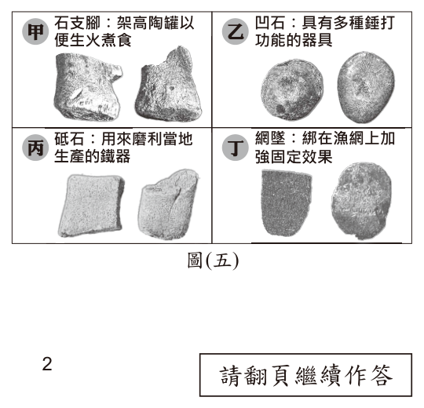
- （A）甲
- （B）乙
- （C）丙
- （D）丁
答案：（C）
詳解與考點
正解：判斷文化層時代要找具有明確年代意義的器物。丙是砥石，可用來磨利當地生產的鐵器；鐵器出現表示已進入鐵器時代，因此C最適合作為判斷時代的證據。
A：甲為石支腳，用於架高陶罐以便生火煮食，屬一般生活工具，各時代皆可能出現，難以定年，錯誤。
B：乙為凹石，具有多種錘打功能，缺乏專屬某一時代的特徵，錯誤。
D：丁為網墜，用來綁在漁網上加強固定，也是跨時代可見的工具；它看起來對，是因為外形具有辨識度，但定年要看是否含有時代指標，錯誤。
本題考點：考古定年——優先選擇能指向特定技術或時代的指標器物；一般用途的石器即使完整出土，也未必足以判定文化層年代。
第 9 題
某宮廟因違法擴建道路及廟宇建築，涉嫌竊占國土及濫墾山坡地，相關單位多次介入協調，要求廟方自行拆除，但該廟負責人認為廟地選址及擴建的決定皆為神明指示，堅決不願退讓，於是相關單位除了開罰六萬元外，並將負責人移送法辦。上述內容最可能是關於下列哪二者之間的衝突？
- （A）環境保育與經濟發展
- （B）法律規範與宗教信仰
- （C）傳統習俗與倫理道德觀念
- （D）信仰宗教自由與人民財產權
答案：（B）
詳解與考點
正解：題幹的關鍵在於廟方以「神明指示」拒絕拆除違法擴建，對照相關單位依竊占國土、濫墾山坡地等規定開罰並移送法辦，呈現宗教信仰與法律規範的衝突。B 指出法律規範與宗教信仰，符合事件雙方主張，故為正解。
A：環境保育是山坡地濫墾所涉及的背景，但題幹著重的是廟方以信仰理由抗拒依法處置，非與經濟發展取捨。
C：題幹沒有傳統習俗與倫理道德觀念相互牴觸的內容，錯誤。
D：廟方並未以人民財產權作為核心主張，而是訴諸神明指示與宗教信仰；它看起來對，是因為事件涉及廟地與建築，容易把土地問題誤認為財產權爭議。
本題考點：基本權利與法律規範的衝突辨析——先找行為人拒絕處置的理由，再對照政府介入所依據的規範；宗教信仰爭議——若題幹以信仰理由對抗違法處置，核心通常是宗教信仰與法律規範，而非土地的財產利益。
第 10 題
國中生小安寄了一封陳情信給某位公職人員，信中敘述父親因沉迷賭博，導致家中債臺高築，害他的父母離異、家庭破碎，希望有人能幫幫他，讓父親不再沉溺賭海。該名公職人員收到信後立刻啟動偵辦，循線破獲非法賭場，並依法對賭場業者與賭徒提起公訴。根據上述內容判斷，小安寄信的對象應是下列何者？
- （A）法官
- （B）律師
- （C）檢察官
- （D）警察局局長
答案：（C）
詳解與考點
正解：題幹的關鍵職權是「依法提起公訴」；檢察官可指揮偵查並代表國家提起公訴，因此寄信對象最可能是檢察官，C 為正解。
A：法官的職責是依法審判案件，不會因收到陳情即自行啟動偵辦或提起公訴。
B：律師可受當事人委任提供法律服務，但沒有國家偵查權與公訴權。
D：警察局局長及警察可協助偵查、破獲賭場；它看起來接近題意，但提起公訴仍屬檢察官職權。
本題考點：刑事司法分工——警察負責犯罪偵查與執行，檢察官依法偵查並提起公訴，法官負責審判；職權判讀——見到「提起公訴」即可鎖定檢察官。
第 11 題
創新科技公司為了讓其產品「LED 省電燈泡」的銷售量增加，在各大報紙刊登廣告，內容如圖（六）所示。根據圖中內容判斷，該公司最可能是採取下列何種方式來達成目標？
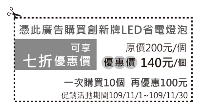
- （A）降低成本
- （B）價格競爭
- （C）建立品牌形象
- （D）延長營業時間
答案：（B）
詳解與考點
正解：廣告以「七折」、「優惠價 140 元」及「買 10 個再折 100 元」吸引消費者，關鍵全是以較低售價促銷，屬價格競爭，故 B 為正解。
A：降低成本是廠商內部的生產或管理措施，廣告所呈現的是對消費者降價，不能據此判定。
C：建立品牌形象會著重品質、理念或識別；本廣告主要訴求價格。
D：延長營業時間與折扣、優惠價格無關。
本題考點：廠商競爭策略——直接降價、折扣或滿額優惠屬價格競爭；判讀原則——區分面向消費者的售價策略與內部降低成本措施。
第 12 題
圖（七）呈現某國不同年分出生的婦女，在育齡期間累積的生育數。為了改變圖中資料呈現的趨勢以維持人口結構穩定，下列何者最可能是未來該國政府採行的作法？
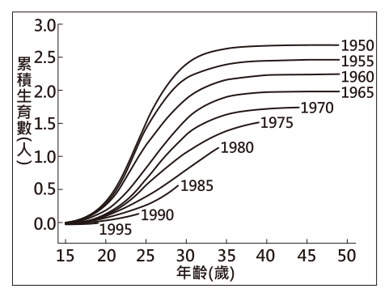
- （A）提高幼兒教育補助金額
- （B）加強宣導節制生育觀念
- （C）提供弱勢學童輔導課程
- （D）增設高齡安養照護機構
答案：（A）
詳解與考點
正解：圖中較晚出生婦女在育齡期間累積的生育數較低，顯示少子化趨勢；若要維持人口結構穩定，須降低育兒負擔、鼓勵生育。提高幼兒教育補助可減少家庭養育成本，最符合題意，故 A 為正解。
B：宣導節制生育會進一步降低生育數，方向與目標相反。
C：弱勢學童輔導是教育扶助，不能直接提高生育意願。
D：增設高齡安養照護機構回應高齡化需求，不能直接扭轉低生育趨勢。
本題考點：人口結構——生育數持續下降會造成少子化；政策對應——欲改善低生育，應採取降低育兒成本或支持育兒的措施，而非節制生育。
第 13 題
表（二）是四位同窗好友的相關資料。若僅根據表中內容判斷，何者最可能不曾具有我國國籍？
表（二）| 姓名 | 出生地 | 出生時父母的國籍 | 現況 |
|---|
| 王大軒 | 洛杉磯 | 中華民國 | 擔任立法委員 |
| 李大賢 | 臺中 | 美國 | 在澳洲工作 |
| 陳小涵 | 臺北 | 美國 | 擔任高雄市市議員 |
| 林小潔 | 西雅圖 | 中華民國 | 在日本留學 |
- （A）王大軒
- （B）李大賢
- （C）陳小涵
- （D）林小潔
答案：（B）
詳解與考點
正解：我國國籍以血統主義為主，出生地本身不當然取得我國國籍。表中李大賢雖出生於臺中，但出生時父母國籍均為美國，且現於澳洲工作，僅據表中資料最可能不曾具有我國國籍，故 B 為正解。
A：王大軒出生時父母為中華民國國籍，即使出生於洛杉磯，仍可能依血統取得我國國籍。
C：陳小涵出生時父母為美國國籍，但現為高雄市市議員，可能已取得我國國籍；不能判定不曾具有。
D：林小潔出生時父母為中華民國國籍，即使出生於西雅圖，仍可能依血統取得我國國籍。
本題考點：國籍取得——我國以血統主義為主，先看出生時父母國籍而非出生地；資料判讀——題目問「最可能不曾」，須選出表中缺乏我國國籍連結且無相反資訊者。
第 14 題
歐盟基於公眾健康及動物福利等理由，於2012年起，禁止境內農民以傳統格子籠方式飼養蛋雞，並立法規定市售雞蛋必須明確標示其飼養方式，讓消費者可以在平飼(即室內放養蛋雞)、放牧(除室內空間外，還提供蛋雞戶外活動空間) 等友善生產的蛋品之間做出選擇。上述友善飼養方式逐漸在臺灣推行，但所產出的蛋品在臺灣市占率仍不高，其原因最可能為下列何者？
- （A）食安問題頻傳
- （B）蛋品品質不佳
- （C）蛋品售價較高
- （D）飲食習慣改變
答案：（C）
詳解與考點
正解：題幹指出友善飼養蛋品在臺灣市占率不高，關鍵是此類飼養通常增加空間、設備與管理成本，售價往往較一般籠養蛋高；價格較高會降低部分消費者的購買意願，因此 C 最合理。
A：食安問題頻傳反而可能使消費者轉向重視飼養方式的蛋品，不能直接解釋市占率低。
B：友善飼養並非以蛋品品質不佳為主要特徵，與題幹訴求不符。
D：飲食習慣改變未指出會特別降低友善蛋品需求，因果關係不足。
本題考點：價格與需求——其他條件相近時，售價較高可能降低購買量與市占率；成本轉嫁——生產成本上升可能反映在商品售價。
第 15 題
美國具有多樣化的氣候類型，圖（八）是將美國各區域與世界上其他國家的氣候特徵相比，把具有類似氣候特徵的國家標示在該區域上。臺灣最可能標示在圖中甲、乙、丙、丁何處？
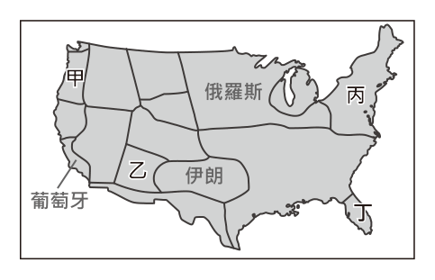
- （A）甲
- （B）乙
- （C）丙
- （D）丁
答案：（D）
詳解與考點
正解：臺灣位於低緯度海島，整體呈副熱帶至熱帶的溫暖濕潤特徵；圖中丁所對應的美國東南部，如佛羅里達一帶，也具低緯、濕潤、溫暖的氣候條件，因此臺灣最可能標在丁，選 D。
A：甲位於美國西北部，氣候較冷涼，與臺灣的溫暖濕潤不符。
B：乙類比伊朗，重點是乾燥氣候，與臺灣多雨濕潤不符。
C：丙在五大湖北方一帶，冬季較冷，與臺灣氣候不符。
本題考點：氣候類比——同時比較緯度、溫度與降水特徵；臺灣氣候——以溫暖濕潤為判準，排除寒冷或乾燥區域。
第 16 題
婆羅洲島分屬印尼、汶萊與馬來西亞三國，圖（九）為其原始森林不同時期面積的變化。圖中原始森林的變化趨勢與下列該島何種變化趨勢最為相似？
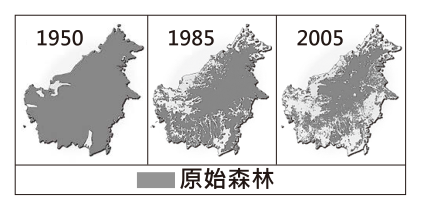
- （A）油田開採的面積
- （B）都市聚落的範圍
- （C）野生動物的棲地範圍
- （D）熱帶作物的種植面積
答案：（C）
詳解與考點
正解：圖中原始森林面積自 1950 至 2005 持續縮減；森林是野生動物的重要棲地，森林減少時棲地範圍也會隨之減少，兩者均為遞減趨勢，因此 C 為正解。
A：油田開採面積多隨開發增加，趨勢不會與森林縮減相似。
B：都市聚落範圍通常隨人口與開發擴張，趨勢相反。
D：熱帶作物種植面積常因開墾森林而增加，與原始森林遞減相反；它看起來相關，是因為兩者確有開發關聯，但題目問的是變化趨勢是否相似。
本題考點：環境變遷——森林減少會壓縮野生動物棲地；趨勢判讀——先辨認圖表為持續遞減，再選同向遞減的項目。
第 17 題
臺灣某茶商為了提高自有茶園的茶葉產量，以供應國內日益成長的罐裝茶及手搖茶市場需求，且能與由越南、斯里蘭卡等產區進口的低價茶葉競爭，因而導入滴灌技術，精準計算用水及肥料使用量。此外，也利用農業機具栽種茶苗，並以無人機巡視，噴藥及採收時間則以網路平臺管理。上述各項措施，最主要可達到下列何種成效？
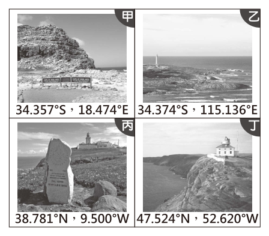
- （A）利於傳統茶園轉型成休閒農場
- （B）降低勞力成本占總成本的比例
- （C）提升茶葉品質以提高單位價格
- （D）增加出口至東協國家的茶葉量
答案：（B）
詳解與考點
正解：題幹的滴灌、農業機具、無人機與網路平臺管理，都是以科技與資本設備替代或節省人工，觸發農業生產要素中降低勞力依賴的判斷。B「降低勞力成本占總成本的比例」最能概括這些措施的直接成效，故為正解。
A：轉型為休閒農場須發展觀光、體驗等服務，題幹未提及，錯誤。
C：精準用水、施肥與機械管理可降低成本，但不必然提升品質或提高單位價格，錯誤。
D：與低價進口茶競爭的手段是降低生產成本，不是直接增加出口至東協的數量，錯誤。
本題考點：農業技術與生產要素——滴灌、農機、無人機及數位管理若用來節省人力，即判斷為以資本與科技替代勞力；成本結構判讀——降低某項投入的使用量，可降低其占總成本的比例，但不等於產品售價必然上升。
第 18 題
圖 ( 十 ) 為全球四個著名岬角的位置資訊，其中何者位於歐亞大陸西部海岸？
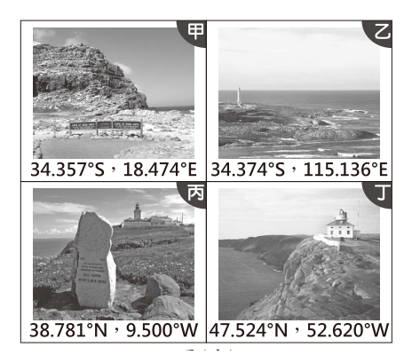
- （A）甲
- （B）乙
- （C）丙
- （D）丁
答案：（C）
詳解與考點
正解：題幹問歐亞大陸西部海岸，須同時用緯度判斷半球、用經度判斷位置。C 的丙位於38.781°N、9.500°W，在北半球且為西經，對應葡萄牙羅卡角，位於歐亞大陸西部海岸，故為正解。
A、B：甲、乙都在南緯，分別位於南非、澳洲附近，不在歐亞大陸西部海岸，錯誤。
D：丁雖為47.524°N、52.620°W，卻位於北美洲東岸；它看起來對，是因為同樣是北緯、西經，但還須辨別所屬大陸，錯誤。
本題考點：經緯度定位——先看南北緯判斷半球，再看東西經與海陸位置判斷區域；歐亞大陸西部海岸——常見於北緯、西經的歐洲西岸，但不可只憑西經就判為歐洲。
第 19 題
「歷史事實」與「歷史解釋」的區別，在於歷史事實是客觀呈現過去發生的事件；而歷史解釋則是後人運用歷史資料，對相關歷史事件進行的詮釋與評價。下列敘述中，何者最適合歸類為「歷史事實」？
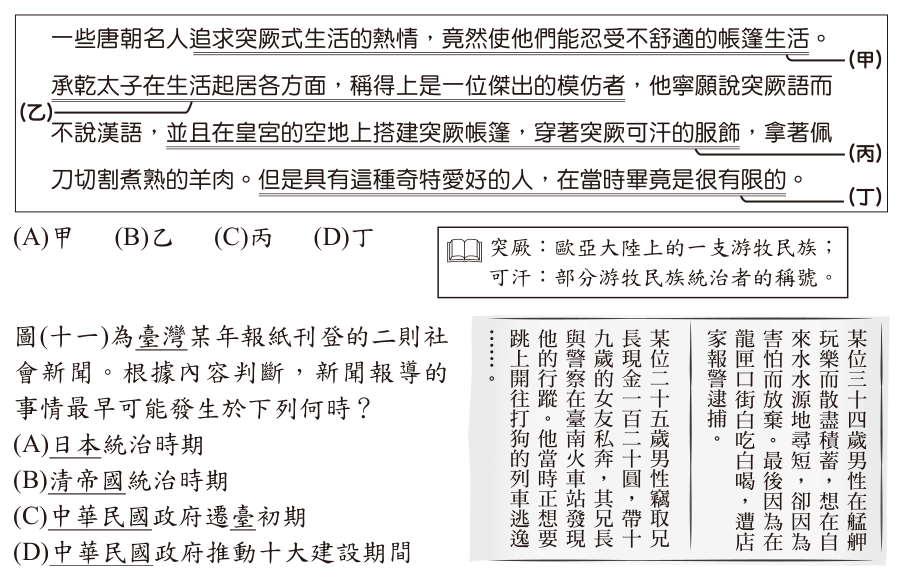
- （A）甲
- （B）乙
- （C）丙
- （D）丁可汗：部分游牧民族統治者的稱號。
答案：（C）
詳解與考點
正解：題幹區分「客觀呈現已發生事件」與「後人詮釋、評價」，關鍵是敘述是否帶有判斷立場。C 為客觀陳述歷史上的具體人事時地物，未加入價值評判，最適合歸類為歷史事實，故為正解。
A：含有對歷史事件的詮釋性語言，不只是陳述可查證的事件，錯誤。
B：含有對事件意義或結果的評價，屬歷史解釋，錯誤。
D：含有後人歸納、說明的成分，不屬單純的歷史事實，錯誤。
本題考點：歷史事實與歷史解釋——可由史料查證的具體事件屬歷史事實；若出現「重要」、「偉大」、「失誤」等評判詞，或對原因、意義作推論，通常屬歷史解釋。
第 20 題
圖（十一）為臺灣某年報紙刊登的二則社會新聞。根據內容判斷，新聞報導的事情最早可能發生於下列何時？
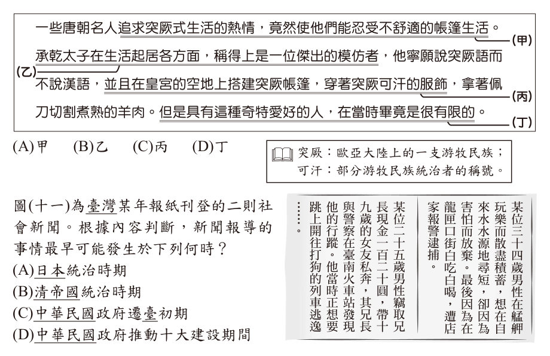
- （A）日本統治時期
- （B）清帝國統治時期
- （C）中華民國政府遷臺初期
- （D）中華民國政府推動十大建設期間
答案：（A）
詳解與考點
正解：題幹兩則新聞出現「艋舺」「自來水水源地」「臺南火車站」「開往打狗的列車」與「圓」等用語，並以白話短新聞形式呈現。打狗於 1920 年改名高雄，臺北自來水水源地與縱貫鐵路臺南段皆屬日治時期建設，加上大眾白話社會新聞的報業背景，整體最早只能是日本統治時期，故 A 為正解。
B：清帝國統治時期臺灣的鐵路僅有劉銘傳所築基隆—新竹段，但題幹的臺南火車站、開往打狗的縱貫線列車與臺北自來水水源地皆屬日治時期建設，白話社會新聞的報業形式也不符清代，故最早不可能是清帝國時期，B 錯誤。
C：中華民國政府遷臺初期已是戰後；打狗在 1920 年即改名高雄，戰後不會再以打狗稱之，且題目問「最早可能」，故 C 錯誤。
D：十大建設期間屬 1970 年代，更晚於日治與戰後初期，同樣不符打狗的用語與最早可能的判準，D 錯誤。
本題考點：史料判讀——由地名（打狗、艋舺）、自來水水源地、縱貫鐵路與白話報業等線索綜合定年；最早可能的判準——選項須符合所有線索，並在可行的時代中取最早者。
第 21 題
日本料理「天婦羅」，是將食材裹上澱粉漿之後下鍋油炸，這種料理源自於天主教徒在齋戒期間，將食材油炸後食用。在沒有冷凍技術的時代，因為油炸食物容易保存，所以水手於遠洋航行時也會準備油炸魚類作為糧食。葡萄牙的天主教徒最初到日本傳教與貿易時，同時傳入這種料理。「天婦羅」傳入日本的時代背景，最可能是下列何者？
- （A）外國艦隊脅迫幕府開港，促使日本推動明治維新
- （B）西方各國展開海外探險，建立到達東方的新航線
- （C）日本受大唐文化的薰染，效法唐朝推動制度改革
- （D）民主陣營為防堵共產勢力，派遣艦隊駐防太平洋
答案：（B）
詳解與考點
正解：題幹的葡萄牙天主教徒傳教、貿易與航海保存食物，關鍵在歐洲人經海路到達東方。這發生於15至16世紀西方海外探險、開闢新航線的大航海時代，B 為正解。
A：外國艦隊迫使日本開港與明治維新在19世紀，晚於葡萄牙人最初赴日，錯誤。
C：日本仿效唐朝制度改革在7至8世紀，遠早於大航海時代，錯誤。
D：民主陣營防堵共產勢力是20世紀冷戰背景，時代不符，錯誤。
本題考點：大航海時代——15至16世紀歐洲各國展開海外探險，開闢通往東方的新航線；時代判讀——葡萄牙傳教與貿易到日本，應連結大航海時代，而非明治維新、仿唐或冷戰。
第 22 題
一列火車在德國官方祕密安排下，從蘇黎世出發前往俄國，車上乘客包括列寧及其布爾什維克黨同志，這些人曾因為反對俄國政府而流亡海外。列寧等人沿途經過德國、瑞典、芬蘭，最後抵達俄國的首都彼得格勒(今聖彼得堡)。半年後，他們領導革命，推翻臨時政府，組織新的政權，對俄國產生重大影響。當時德國官方安排這班列車的目的，最可能為下列何者？
- （A）與俄國結盟對抗拿破崙
- （B）欲緩和冷戰東西對立局勢
- （C）遵守《德蘇互不侵犯條約》
- （D）為使俄國退出第一次世界大戰
答案：（D）
詳解與考點
正解：列寧於1917年在德國安排下返俄，半年後領導革命推翻臨時政府，關鍵是第一次世界大戰期間德國欲解除東線壓力。德國期待革命使俄國退出第一次世界大戰，故 D 為正解。
A：拿破崙戰爭在19世紀初，與1917年事件不符，錯誤。
B：冷戰是第二次世界大戰後的東西對立，時代不符，錯誤。
C：《德蘇互不侵犯條約》簽於1939年，當時尚未存在；它看起來對，是因為同樣涉及德國與俄國，但年代相差22年，錯誤。
本題考點：第一次世界大戰與俄國革命——1917年布爾什維克革命後俄國退出戰爭，減輕德國東線壓力；歷史年代比對——先定位事件年代，再排除屬拿破崙戰爭、冷戰或第二次世界大戰前夕的選項。
第 23 題
甲國政府自2019年起，要求記者須通過關於國家領袖思想的考試後，才能取得記者證，藉以強化他們對國家領袖的效忠。圖(十二)是近年該國政府核發記者證數量的變化，而表(三)則是無國界記者組織提出的全球新聞自由指數報告中，該國近年的排名狀況，排名越前面代表新聞自由程度越高。根據相關資訊判斷，關於甲國政府的此項作法，下列敘述何者最合理？表(三) 時間(年) 新聞自由指數排名全球倒數第5 全球倒數第5 全球倒數第5 全球倒數第5 全球倒數第4 全球倒數第4 圖(十二)
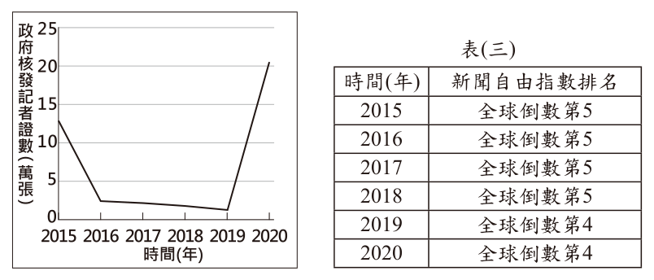
- （A）政府藉由立法規範，以保障記者的新聞自由
- （B）政府採取獎勵政策，以促使新聞產業蓬勃發展
- （C）政府削減新聞記者人數，以便管控媒體報導內容
- （D）政府透過管控記者思想，以影響閱聽人接收的新聞
答案：（D）
詳解與考點
正解：要求記者先通過國家領袖思想考試、藉以強化效忠，關鍵是管控媒體工作者的思想。此作法會影響記者報導內容，進而影響閱聽人接收的新聞，D 最合理。
A：表中新聞自由排名長年接近全球倒數，與保障新聞自由相反，錯誤。
B：思想審查是控制而非獎勵，不能據此判斷新聞產業會蓬勃發展，錯誤。
C：題幹雖呈現記者證數量變化，核心措施是思想管控，不是以削減記者人數為目的；它看起來對，是因為管制可能影響人數，但不能取代題幹明示的控制方式，錯誤。
本題考點：新聞自由——以領袖思想考試作為記者證門檻，屬對媒體從業者的政治控制；媒體影響——管控記者的資格與思想，會間接影響新聞內容及閱聽人取得的資訊。
第 24 題
表（四）呈現阿森在近三屆我國總統選舉資格的變化情形。根據表中內容判斷，阿森在第 14 屆至第 15 屆之間，最可能發生了下列哪一件事？
表（四）| 屆次 | 總統選舉參選資格 | 總統選舉投票資格 |
|---|
| 13 | 不具備 | 具備 |
| 14 | 不具備 | 具備 |
| 15 | 不具備 | 不具備 |
- （A）被政黨開除黨籍
- （B）遭法院監護宣告
- （C）遷移戶籍至其他縣市
- （D）遭法院判處褫奪公權
答案：（B）
詳解與考點
正解：表（四）顯示阿森第 14 屆仍具投票資格，第 15 屆改為不具備，而參選資格三屆皆不具備。這種只改變投票資格的情形，最符合遭法院監護宣告，故 B 為正解。
A：被政黨開除黨籍不影響公民的選舉權，錯誤。
C：遷移戶籍至其他縣市仍可在符合規定的選區投票，不會當然喪失投票資格，錯誤。
D：依題目所屬的當時法制，褫奪公權會同時影響投票與參選等公權利，不能解釋表中僅第 15 屆投票資格由具備改為不具備、參選資格始終不具備的變化。
本題考點：選舉資格判讀——比較表格各屆的參選與投票資格，先找出實際變動欄位；投票權限制——依題目所屬的當時法制，遭法院監護宣告會影響選舉權，政黨身分或戶籍遷移則不當然使人失去投票資格。
第 25 題
我國國會可對中央政府部分官員的人事提名案行使同意權，並在投票表決前，藉由提問來審查被提名人是否適任。根據我國公職人員的法定職權判斷，下列哪一個問題的提問對象最可能是大法官被提名人？
- （A）如何提升違法官員彈劾案件的辦案效率
- （B）如何落實嚴謹審核中央政府年度總決算
- （C）我國仍維持死刑刑罰是否違反基本人權
- （D）公務人員的選才制度是否有改善的空間
答案：（C）
詳解與考點
正解：題幹問的是大法官被提名人的適任性，關鍵在大法官審理憲法爭議、判斷法律或國家行為是否牴觸基本權利；「我國仍維持死刑刑罰是否違反基本人權」正屬此範疇，C 為正解。
A：違法官員的彈劾案件屬監察委員行使彈劾權的範圍，不是大法官的主要職權，錯誤。
B：中央政府年度總決算的審核屬審計機關職掌，不是大法官職權，錯誤。
D：公務人員選才制度主要屬考試院及其所屬機關的職掌，不是大法官職權，錯誤。它看起來對，是因為同樣涉及中央政府人事制度，但大法官並不負責規畫公務人員考選。
本題考點：五院職權辨識——先依問題內容判斷是憲法審判、彈劾、審計或考選；大法官職權——涉及憲法解釋與基本權利是否受侵害時，應優先判斷為大法官審理範疇。
第 26 題
圖(十三)為某條鐵路的路線圖，該鐵路全線的海拔高度變化最可能為下列何者？
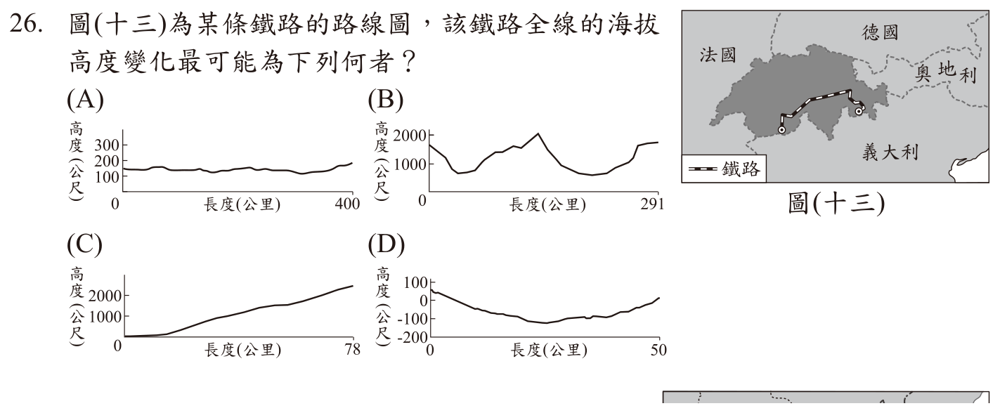
本題選項為上圖中的 A／B／C／D，請對照圖片作答。
答案：（B）
詳解與考點
正解：題幹的鐵路位於瑞士阿爾卑斯山區，關鍵是高山地形造成沿線海拔大幅升降。B 圖呈現高低劇烈起伏、最高可達約2000公尺的剖面，最符合高山鐵路，故為正解。
A：海拔低且起伏小，不符翻越阿爾卑斯山區的路線，錯誤。
C：呈現單向上升，未反映高山路線跨越山地後的起伏，錯誤。
D：出現負海拔，不符此高山鐵路的地形特徵，錯誤。
本題考點：地形剖面判讀——山區鐵路的海拔通常高且起伏明顯；區位與地形連結——瑞士阿爾卑斯山區應優先選擇跨越高山、海拔變化大的剖面圖。
第 27 題
2014年中國吉林省與俄羅斯合作擴建圖（十四）中的甲港口，目前出口貨物可不經由大連港，透過甲港口可大幅縮短與鄰近國家部分港口的航運時間。擴建甲港口除上述目的外，最可能還含下列何優勢？
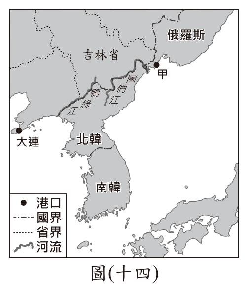
- （A）作為俄羅斯船隻通往大西洋的出海口
- （B）加速俄羅斯將開發重心轉向歐俄平原
- （C）作為中、俄兩國鴨綠江流域貨物出入的港口
- （D）提供中國船隻藉由此港口通往北極海的捷徑
答案：（D）
詳解與考點
正解：甲港位於圖們江出海口附近、臨日本海；中國船隻可由此向北連通鄂霍次克海，再前往北極海，因此可縮短通往北極海的航程，故 D 為正解。
A：由日本海通往大西洋並非此港的區位優勢，方向也不符。
B：港口擴建不能直接推論俄羅斯將開發重心轉向歐俄平原，且與甲港功能無直接關係。
C：甲港鄰近圖們江，不在鴨綠江流域，錯誤。
本題考點：港口區位——先由河口與臨海位置判斷可連通的海域；東北亞海運——圖們江出海口鄰日本海，可向北銜接通往北極海的航線。
第 28 題
2014年世界上只有5%的人口居住在圖(十五)中的深灰色區域；而相同數量的人口則居住在圖中黑色區域。小齊想要在地圖上的淺灰色區域，以圓圈標示另一個人口數量最相近的範圍，則他標示在下列何地最為適宜？
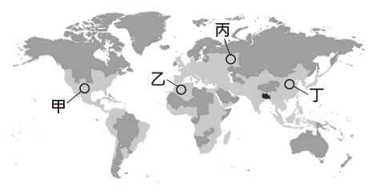
- （A）甲
- （B）乙
- （C）丙
- （D）丁
答案：（D）
詳解與考點
正解：題幹要求在圖中的淺灰色區域標示人口數量最相近的範圍，判斷重點是找出面積雖大、人口卻稀少的地區。D 所示位置符合圖中淺灰色的人口稀疏區，圈選後的人口數量最接近深灰色或黑色區域各占的5%，故為正解。
A：甲所在範圍的人口分布條件與題幹要求的淺灰色稀疏區不符，錯誤。
B：乙所在範圍不能形成與題示5%人口相近的適當圈選，錯誤。
C：丙雖有人口稀少的地帶，但與圖示淺灰色區域及所需圈選範圍不相符，錯誤。
本題考點：世界人口分布——人口稀疏區常見於高緯寒冷、乾燥沙漠或高山地帶；人口地圖判讀——比較人口數量時，須同時考量圈選範圍與人口密度，不能只看土地面積。
第 29 題
世界氣象組織（WMO）定義熱浪標準為連續 5 日的每日最高氣溫，皆高於歷年最暖月的最高氣溫平均值 5℃ 以上。表（五）為臺北測站 1981 至 2010 年氣溫相關資料，根據上述定義，臺北在下列何種情形即達到此一熱浪標準？
表（五）臺北測站 1981 至 2010 年氣溫相關資料| 月分 | 1 | 2 | 3 | 4 | 5 | 6 | 7 | 8 | 9 | 10 | 11 | 12 | 年平均 |
|---|
| 氣溫（℃） | 16.1 | 16.5 | 18.5 | 21.9 | 25.2 | 27.7 | 29.6 | 29.2 | 27.4 | 24.5 | 21.5 | 17.9 | 23.0 |
| 最高氣溫（℃） | 19.1 | 19.6 | 22.1 | 25.7 | 29.2 | 32.0 | 34.3 | 33.8 | 31.1 | 27.5 | 24.2 | 20.7 | 26.6 |
| 最低氣溫（℃） | 13.9 | 14.2 | 15.8 | 19.0 | 22.3 | 24.6 | 26.3 | 26.1 | 24.8 | 22.3 | 19.3 | 15.6 | 20.4 |
- （A）連續 5 天出現 31.6℃ 以上高溫
- （B）連續 5 天出現 34.3℃ 以上高溫
- （C）連續 5 天出現 34.6℃ 以上高溫
- （D）連續 5 天出現 39.3℃ 以上高溫
答案：（D）
詳解與考點
正解：題幹定義為連續5日的每日最高氣溫，都高於最暖月最高氣溫平均值5℃以上。表（五）中最高氣溫平均最高的是7月的34.3℃；34.3+5=39.3℃，因此連續5天達39.3℃以上時符合題意，D 為正解。
A：31.6℃未以最暖月的最高氣溫平均值為基準加5℃，錯誤。
B：34.3℃只是7月最高氣溫平均值，漏加5℃，錯誤。
C：34.6℃雖略高於34.3℃，仍未達34.3+5=39.3℃的門檻；它看起來對，是因為數值高於最暖月平均，但題幹另要求高5℃以上，錯誤。
本題考點：表格數據運算——先找「最暖月」的最高氣溫平均值，再依定義加上5℃；熱浪判準——除達溫度門檻外，還須連續5日的每日最高氣溫皆符合。
第 30 題
以下是中國天津某年慶祝元旦的相關報導：「政府要求各機關及各民眾團體，在元旦上午參加慶祝中華民國成立的紀念大會。當晚民眾提燈遍遊街市，高呼『勿忘國恥』、『抵制日貨』、『打倒貪官汙吏』、『打倒燒香化紙、磕頭拜年的惡習』等口號。各街市商號張貼標語、懸燈結綵，國民黨黨旗和國旗飄揚天際，蔚為盛況。」上述內容最可能是描繪下列何時的景象？
- （A）1861-1895年自強運動期間
- （B）1928-1937年十年建設期間
- （C）1958-1961年農工大躍進期間
- （D）1966-1976年文化大革命期間
答案：（B）
詳解與考點
正解：「中華民國成立紀念大會」與「國民黨黨旗和國旗」，再加上抵制日貨等時代氛圍，指向南京國民政府統治中國大陸的 1928-1937 年十年建設期間。故選 B。
A：自強運動在 1861-1895 年，早於中華民國成立，不可能出現慶祝中華民國成立的活動。
C：農工大躍進時期由中國共產黨執政，情境不會以國民黨黨旗和中華民國成立紀念為核心。
D：文化大革命同樣在中國共產黨執政時期，與題幹的國民黨旗、民國紀念不符。
本題考點：中國近代史時序——先用政權與旗幟辨識時代，再以事件定位；出現中華民國成立紀念及國民黨旗，應連結國民政府統治大陸的十年建設期間。
第 31 題
圖（十六）是某時期中國海外貿易的進出口總額統計圖。觀察圖中各區域與中國的貿易概況，分析造成圖中第「Ⅱ」階段變化的主要原因，最可能與下列何者有關？
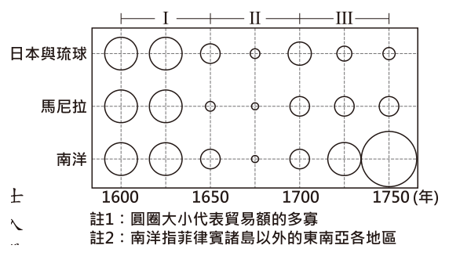
- （A）朝廷驅逐在華的耶穌會傳教士
- （B）玉米、馬鈴薯等美洲作物傳入
- （C）義和團事變對社會經濟的衝擊
- （D）鄭氏勢力擁兵東南與清廷對抗
答案：（D）
詳解與考點
正解：圖中第Ⅱ階段約為1650-1700年，貿易額萎縮至谷底；1660年代起清廷為切斷鄭氏勢力而實施海禁、遷界令，1683年鄭氏降清後才回升，故與鄭氏勢力擁兵東南、清廷對抗最相關，選 D。
A：驅逐在華耶穌會傳教士不是造成此一時段海外貿易萎縮的主要原因，錯誤。
B：玉米、馬鈴薯等美洲作物傳入主要影響農業與人口，不能解釋第Ⅱ階段的貿易谷底，錯誤。
C：義和團事變發生於1900年，年代遠晚於第Ⅱ階段，錯誤。
本題考點：明清海外貿易——時間軸先定位1650-1700年；因果判讀——清廷為對抗鄭氏而海禁、遷界，會直接限制海上貿易。
第 32 題
謝先生是王小姐的前夫，但謝先生屢次侵擾王小姐的住處，甚至還到她上班的地方騷擾，最後謝先生因違反保護令的相關規定，被判處拘役四十天。根據上述內容判斷，下列敘述何者正確？
- （A）謝先生必須為自己的違法行為負起刑事責任
- （B）王小姐因警察局所核發的保護令而獲得保障
- （C）謝先生若不服判決可向地方法院提出民事訴訟
- （D）王小姐可依《性別平等教育法》向謝先生求償
答案：（A）
詳解與考點
正解：題幹明示謝先生因違反保護令規定而被判處拘役40天。拘役是刑事處罰，所以謝先生須為違法行為負起刑事責任，A 為正解。
B：保護令由法院核發，不是警察局核發，錯誤。
C：不服刑事判決應循刑事救濟程序提起上訴，不是向地方法院提出民事訴訟，錯誤。
D：本案是前夫侵擾前妻並違反保護令，應適用《家庭暴力防治法》；《性別平等教育法》處理校園性別事件，錯誤。
本題考點：家庭暴力法律責任——違反保護令而受拘役，屬刑事責任；保護令制度——保護令由法院核發；法律適用——家庭暴力事件與校園性別事件分別依不同法律處理。
第 33 題
開班會時，有些同學在玩牌、有些同學在吃東西，阿偉認為吵雜聲使他聽不清楚其他人的發言內容，影響到他參與會議的權利。圖(十七)是當日班會的部分過程，阿偉應是在圖中哪一階段要求主席處理上述問題？
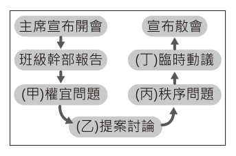
- （A）甲
- （B）乙
- （C）丙
- （D）丁
答案：（A）
詳解與考點
正解：吵雜聲使阿偉聽不清楚發言，直接妨礙其參與會議的權利，應提出權宜問題請主席即時處理。圖中的甲是處理權宜問題的階段，因此 A 為正解。
B：乙不是針對與會者權利或會場秩序的即時處理階段，錯誤。
C：秩序問題是針對議事程序違規，不等同於保障個人因吵雜而無法參與的權利，錯誤。
D：臨時動議是提出新議案，不是請主席處理當下妨礙參與權的情況，錯誤。
本題考點：會議議事程序——與會者權利、安全或會場秩序受妨礙時，可隨時提出權宜問題；選項辨析——秩序問題處理議事違規，臨時動議則用於提出新案，須依提出目的區分。
第 34 題
某日阿蔚透過網路觀看立法院的議事實況轉播，根據我國現行法律規定，他最可能看見下列何者的轉播情況？
- （A）審理總統、副總統彈劾案
- （B）表決對行政院的糾正提案
- （C）召開行政院會議規畫施政方針
- （D）行政院部會首長進行施政報告
答案：（D）
詳解與考點
正解：立法院可聽取行政院部會首長施政報告並進行質詢，議事公開時可見相關轉播，因此「行政院部會首長進行施政報告」最符合立法院議事情況，D 為正解。
A：總統、副總統彈劾案的審理不是立法院院會進行的事項，錯誤。
B：對行政院提出糾正屬監察院職權，不是立法院表決的提案，錯誤。它看起來對，是因為立法院也能監督行政院，但監督方式是審議、質詢等，不是監察院的糾正權。
C：行政院會議由行政機關自行召開以規畫施政方針，不是立法院會議，錯誤。
本題考點：立法院職權——可審議法案、預算並對行政院首長質詢；五院職權區分——糾正屬監察院，行政院會議屬行政機關內部運作。
第 35 題
「紓解訟源」是近年司法改革的重點之一，其目的是希望讓民眾在提起訴訟前，能透過公正且具有與法院確定判決相同效力的途徑來解決糾紛，這種方式既可避免耗時的訴訟程序，也能減少司法資源的浪費。下列哪種處理方式最符合「紓解訟源」的作法？
- （A）不服行政處分，向上級機關提起訴願
- （B）偷竊財物遭逮，嫌犯希望失主別追究
- （C）車禍無人受傷，雙方私下和解賠償損失
- （D）遭友積欠債務，至調解委員會聲請調解
答案：（D）
詳解與考點
正解：題幹強調訴訟前以公正途徑解決糾紛，且具有與法院確定判決相同效力。向調解委員會聲請調解，經法院核定後具有與確定判決同一效力，最符合紓解訟源，故 D 為正解。
A：訴願是對行政處分的行政救濟程序，不是題幹所指的調解途徑，錯誤。
B：嫌犯希望失主別追究只是私下希望，非公正且具確定判決效力的程序，錯誤。
C：私下和解可處理賠償，但僅具契約效力，並不當然等同法院確定判決；它看起來對，是因為同樣可避免訴訟，卻缺少調解委員會與法院核定的效力，錯誤。
本題考點：紓解訟源——在訴訟前透過調解等非訴訟機制解決民事糾紛，可節省司法資源；調解效力——調解委員會調解經法院核定後，與法院確定判決有同一效力。
第 36 題
圖（十八）為大華與小年住家附近的地圖，甲、乙二商店均販賣大華與小年想購買的某項商品，且該商品在甲商店的售價比乙商店高。若大華僅想就近買到商品，而小年卻只想以便宜的價格購買，則對此二人而言，到哪一間商店購物的機會成本較高？
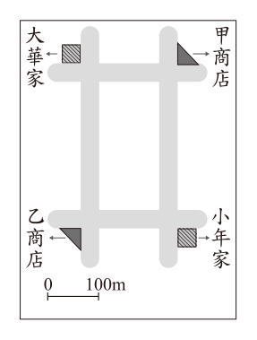
- （A）皆為甲商店
- （B）皆為乙商店
- （C）大華：甲商店，小年：乙商店
- （D）大華：乙商店，小年：甲商店
答案：（D）
詳解與考點
正解：機會成本是為某一選擇所放棄的最高價值。大華只求就近，若去較遠的乙商店便放棄便利，機會成本較高；小年只求便宜，而甲售價較高，去甲便放棄乙的較低價格，機會成本較高。因此大華為乙商店、小年為甲商店，故 D 為正解。
A：小年到甲才放棄較便宜的乙，不是兩人都以甲為較高機會成本，錯誤。
B：小年到乙正好符合便宜的偏好，不是其較高機會成本選擇，錯誤。
C：把兩人的偏好判反；大華應重視距離，小年應重視價格，錯誤。
本題考點：機會成本——判斷時先找個人的目標，再看選擇另一方案會放棄什麼最高價值；比較判準——大華放棄便利的代價在乙較高，小年放棄低價的代價在甲較高，不可只比較實際支付金額。
第 37 題
中國近代某一文章提到：「政府假借預備立憲的美名卻實行中央集權，假借推行新政卻搜刮民間錢財，對外則割讓土地，並出賣採礦權與鐵路經營權。人民反對政策，可能會被處死；如果人民自己出錢出力興修鐵路，又會被官方沒收。政府應該要保護人民，結果人民反而受到政府的傷害，如此不顧人民生命、財產的政府，誰還能忍受呢！」上文的主要訴求最可能是下列何者？
- （A）因對外戰爭受到挫敗，提倡學習西方的軍事及工業技術
- （B）推動制度層面的改革，以解決自強運動改革不彰的問題
- （C）對改革結果感到失望，體認到革命也是救國的途徑之一
- （D）主張全面改革思想文化，提倡西方科學精神與白話文學
答案：（C）
詳解與考點
正解：文章批評清政府假借立憲與新政之名、對外割地賣權、傷害人民，並以「誰還能忍受」表達對改良失望。關鍵是由改革失敗轉向推翻政府，故 C「體認到革命也是救國的途徑之一」最符合。
A：主張學習西方軍事與工業技術是洋務運動，未回應文章對清政府改革與統治的全面批判，錯誤。
B：推動制度改革以挽救自強運動是戊戌變法的取向，文章已認為改良無望，錯誤。
D：提倡科學與白話文學是新文化運動，主題為思想文化改革，與本文革命訴求不符，錯誤。
本題考點：清末革命思想——批評清政府立憲、新政失敗與侵害人民權益，常指向革命救國；近代運動辨析——洋務重技術、戊戌變法重制度、新文化運動重思想文化，革命派則主張推翻舊政權。
第 38 題
圖（十九）中的硬幣為位在南半球的某國於 2019 年所發行。自歐洲人十八世紀移入該地以來，已有約 130 種原住民語絕跡。該國希望藉由此硬幣的發行，提醒人民保存、維護和活化原住民語的重要性。上述硬幣最可能由下列何國發行？
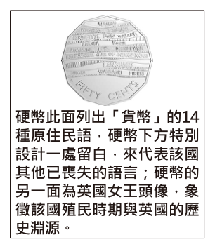
- （A）印度
- （B）秘魯
- （C）澳洲
- （D）菲律賓
答案：（C）
詳解與考點
正解：題幹的南半球、18世紀起歐洲人移入、約130種原住民語絕跡，以及硬幣另一面的英國女王頭像，綜合指向大英國協的澳洲。故硬幣最可能由澳洲發行，C 為正解。
A：印度位於北半球，不符，錯誤。
B：秘魯雖在南半球，但主要受西班牙殖民影響，硬幣不以英國女王頭像為線索，錯誤。
D：菲律賓位於北半球，不符，錯誤。
本題考點：大洋洲區域特徵——澳洲位於南半球，具有歐洲移民與原住民族語言保存議題；殖民史線索——英國女王頭像可作為大英國協歷史關係的判讀線索，須與地理位置一併比對。
第 39 題
小強參加辯論比賽，辯論主題是「目前甲國社會尚未達到性別平等」，若他是站在正方的立場，須提出支持主題的論點，下列四張關於甲國不同面向的統計圖，何者最適合小強作為強化論點的證據？
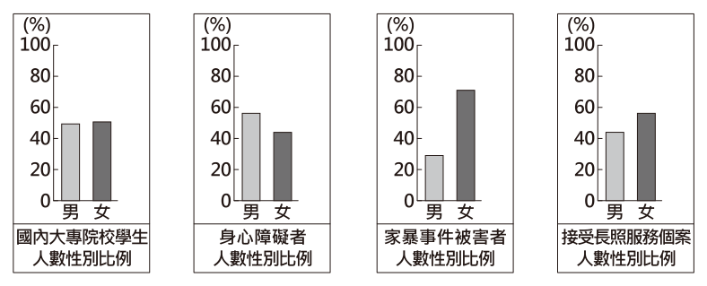
- （A）國內大專院校學生人數性別比例
- （B）身心障礙者人數性別比例
- （C）家暴事件被害者人數性別比例
- （D）接受長照服務個案人數性別比例
答案：（C）
詳解與考點
正解：正方要證明甲國尚未達到性別平等，應選擇性別差距明顯且反映結構性不利的資料。C 的家暴事件被害者女性約7成、男性約3成，落差大且能呈現女性受害處境，因此最能強化論點。
A：大專院校學生人數性別比例接近各半，難以有力證明性別不平等，錯誤。
B：身心障礙者人數性別比例的差距小，與辯題關聯不足，錯誤。
D：接受長照服務個案人數性別比例差距小，不能有力支持正方主張，錯誤。
本題考點：統計證據判讀——支持論點的資料須與主張直接相關，且呈現足夠明顯的差異；性別平等——能反映性別結構性不利或受害風險的統計，較能作為性別不平等的論據。
第 40 題
圖（二十）為小成在研究 2017 年非洲貿易現況時所發現的某些現象。非洲各國採取下列何項措施，最可能有助於改善非洲這些現象？
圖（二十）：
．肯亞是世界主要的花卉生產國，但奈及利亞的花卉有八成來自荷蘭；奈及利亞生產大量棕櫚油，但肯亞的棕櫚油主要進口自馬來西亞。
．以洲內貿易的比例而言，非洲僅有 15%，亞洲是 58%，歐洲高達 67%。
．目前非洲大部分國家的貿易對象主要為歐盟國家、中國及美國。
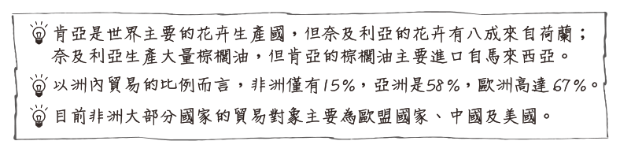
- （A）限定與非洲其他國家的進口配額，保護本國產業
- （B）改善與其他洲的交通運輸，降低貨物的運輸成本
- （C）強化邊境的管制措施，防止鄰國非法貿易的進行
- （D）簽署非洲自由貿易協定，降低非洲國家間的關稅
答案：（D）
詳解與考點
正解：圖（二十）顯示非洲洲內貿易僅15%，遠低於亞洲58%與歐洲67%，且許多商品要由洲外進口。關鍵是降低非洲國家間的貿易障礙，因此簽署非洲自由貿易協定、降低彼此關稅最能促進洲內貿易，D 為正解。
A：限定其他非洲國家的進口配額會增加洲內貿易障礙，錯誤。
B：改善與其他洲的交通可降低洲外運輸成本，卻不能直接解決洲內貿易比例偏低，錯誤。
C：強化邊境管制會阻礙鄰國間貨物流通，與區域整合方向相反，錯誤。
本題考點：區域經濟整合——洲內貿易比例偏低時，可藉自由貿易協定降低會員國間關稅與障礙；貿易資料判讀——比較洲內貿易比例與主要貿易對象，可判斷問題在區域內連結不足。
第 41 題
圖（二十一）是日本繪製的第二次世界大戰形勢圖，三種圖例代表與日本三種不同關係。從圖中標示的圖例，可得知這是 1941 年底太平洋戰爭爆發後的世界形勢，最主要的判斷依據應為下列何者？
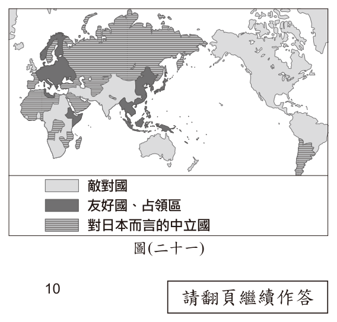
- （A）英國和德國使用不同圖例
- （B）英國和美國使用相同圖例
- （C）朝鮮和日本使用相同圖例
- （D）德國和日本使用相同圖例
答案：（B）
詳解與考點
正解：判斷圖示在1941年底太平洋戰爭爆發後，關鍵是珍珠港事變後美國參戰，與英國同屬對抗日本的同盟國。因此日本形勢圖中英國和美國使用相同圖例，最能作為定年的依據，B 為正解。
A：英國與德國在第二次世界大戰中本就敵對，不能專門判定為1941年底後，錯誤。
C：朝鮮當時受日本殖民統治，與日本圖例相同不是判定太平洋戰爭爆發後的關鍵，錯誤。
D：德國與日本同屬軸心國，早於1941年底已可成立；它看起來對，是因為兩國確有同盟關係，但缺乏能定位美國參戰的資訊，錯誤。
本題考點：太平洋戰爭——1941年底珍珠港事變後美國參戰，與英國同屬同盟國；歷史圖例判讀——找能區分事件前後的新關係，而非選擇早已存在的陣營關係。
第 42 題
圖(二十二)呈現甲、乙、丙三國的貿易情況。若甲國受匯率變動的影響，使得某段時間的進、出口商品數量皆大幅增加，則根據圖中內容判斷，該段時間甲國貨幣的匯率變化，最可能為下列何者？
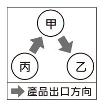
- （A）相對乙、丙兩國貨幣皆升值
- （B）相對乙、丙兩國貨幣皆貶值
- （C）相對乙國貨幣升值，但相對丙國貨幣貶值
- （D）相對乙國貨幣貶值，但相對丙國貨幣升值
答案：（D）
詳解與考點
正解：題幹圖示中甲向乙出口、甲自丙進口，且兩種商品數量都增加。出口到乙增加，表示甲國貨幣相對乙國貨幣貶值，使甲國商品對乙國較便宜；自丙進口增加，表示甲國貨幣相對丙國貨幣升值，使丙國商品對甲國較便宜。因此 D 正確。
A：甲幣若相對乙、丙皆升值，雖有利自丙進口，卻不利出口到乙。
B：甲幣若相對乙、丙皆貶值，雖有利出口到乙，卻不利自丙進口。
C：甲幣相對乙升值不利出口、相對丙貶值不利進口，兩者皆與數量增加相反。
本題考點：匯率與貿易——本國貨幣貶值使出口商品相對便宜，通常有利出口；本國貨幣升值使進口商品相對便宜，通常有利進口；讀圖判準——先由箭頭辨認甲國是進口或出口，再分別判斷相對各國貨幣的升貶值。
第 43 題
圖(二十三)是某一時期的政治宣傳漫畫，圖中「大手」代表當時的國際組織，領導各國對抗侵略者。根據內容判斷，該國際組織最可能是下列何者？
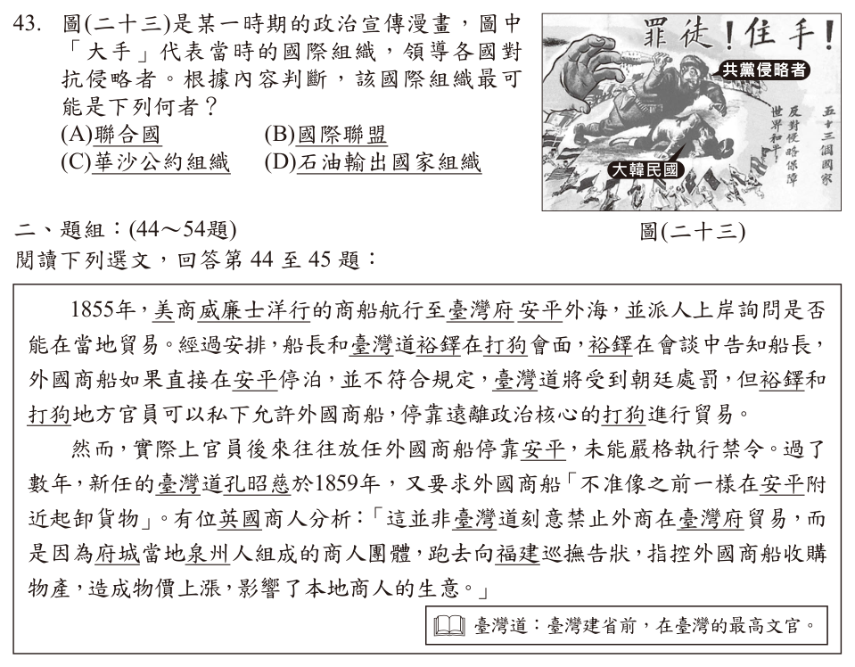
- （A）聯合國
- （B）國際聯盟
- （C）華沙公約組織
- （D）石油輸出國家組織二、題組：(44～54題)
答案：（A）
詳解與考點
正解：漫畫中的「共黨侵略者」與「大韓民國」指出韓戰情境，而由國際組織領導各國對抗侵略者，對應1950年韓戰爆發後聯合國組成聯軍援助南韓，故 A 聯合國為正解。
B：國際聯盟在第二次世界大戰後由聯合國取代，不能對應韓戰時領導聯軍的組織，錯誤。
C：華沙公約組織屬以蘇聯為首的共產陣營，與漫畫所示對抗共黨侵略者的立場相反，錯誤。
D：石油輸出國家組織處理石油生產國協調，與韓戰的集體安全行動無關，錯誤。
本題考點：韓戰與集體安全——看到南韓、共黨侵略與多國共同抵抗，應連結聯合國軍；組織辨識——須以成立時期、成員陣營與功能三者比對，不能只見「國際組織」就混同。
第 44 題
根據上文中裕鐸與洋行的會談結果，當時臺灣對外貿易的情況，最可能是下列何者？
- （A）當時臺灣尚未對外開港，裕鐸嚴禁洋商在臺貿易
- （B）當時臺灣尚未對外開港，實際上洋商已來臺貿易
- （C）當時臺灣已經對外開港，洋商可在臺灣各港口貿易
- （D）當時臺灣已經對外開港，裕鐸仍阻撓洋商在臺貿易
答案：（B）
詳解與考點
正解：裕鐸說外國商船直接停泊安平不合規定，表示當時尚未正式對外開港；但他與地方官員可私下允許外商停靠打狗貿易，且官員後來常放任外商停靠安平，表示洋商實際已來臺貿易。B 同時符合兩項條件，故為正解。
A：當時雖未正式開港，但裕鐸並非嚴禁洋商在臺貿易，反而容許私下在打狗停靠。
C：直接停泊安平「不符合規定」正說明尚未正式開港，不能推論各港口都可貿易。
D：裕鐸容許外商在打狗停靠，並非在已開港後仍阻撓貿易。它看起來對，是因為安平停泊受限，但受限原因是未正式開港，不是已開港後的阻撓。
本題考點：臺灣開港前的對外貿易——1855年尚未正式開港，正式開港須待1858至1860年條約後；史料判讀——同時辨認「制度上不合規定」與「實際上私下或放任貿易」兩層情況。
第 45 題
根據上文，外國商人分析臺灣道重申外國商船不得在安平附近起卸貨物的原因，最可能與下列何者有關？
- （A）安平與鹿耳門泥沙淤積，易造成擱淺
- （B）府城商人透過「郊」來維護自身利益
- （C）日本出兵臺灣南部，清帝國提高警戒
- （D）許多府城商人組成「郊」與洋行合作
答案：（B）
詳解與考點
正解：英國商人明說，重申禁令不是臺灣道刻意禁止外商貿易，而是府城泉州人組成的商人團體向福建巡撫告狀，認為洋商收購物產會推高物價、影響本地生意。這種商人團體即「郊」，可見府城商人透過郊維護自身利益，故 B 正確。
A：安平與鹿耳門淤積未見於文中，也不是英商提出的原因。
C：題幹時間為1859年，文中沒有日本出兵臺灣南部或清帝國提高警戒的資訊。
D：文中說郊因洋商搶生意而向官府告狀，並非與洋行合作。
本題考點：清代臺灣商業組織——郊是地方商人團體，可協調同業並維護商業利益；史料判讀——回答原因題時，優先依材料明示的行動者、動機與結果作答。
第 46 題
根據圖(二十四)中「墘」字地名的分布判斷，下列關於「墘」字地名的推論何者最為合理？
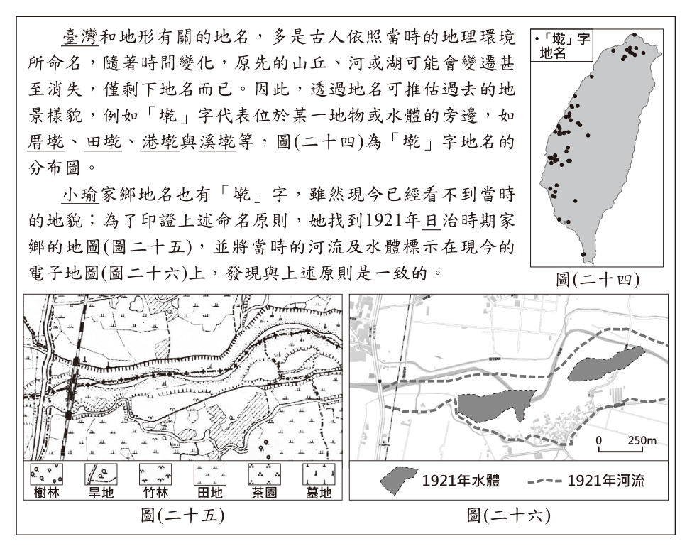
- （A）分布於閩南族群集中區，屬閩南族系的地名
- （B）分布於客家族群集中區，屬客家族系的地名
- （C）分布於現今原住民居住地，為原住民的地名
- （D）受西班牙占領影響，為西班牙語音譯的地名
答案：（A）
詳解與考點
正解：題組說明「墘」指某一地物或水體旁邊，圖（二十四）中的「墘」字地名又密集分布於臺灣西部平原。西部平原是閩南族群主要聚居地，因此可合理推論「墘」屬閩南族系地名，A 為正解。
B：客家族群較集中於丘陵、臺地，與圖中「墘」字地名的主要分布不符，錯誤。
C：現今原住民居住地多在山區與東部，與西部平原密集分布不符，錯誤。
D：西班牙僅短暫占領北部，無法解釋全臺西部平原的密集分布，錯誤。
本題考點：地名與地景——「墘」表示地物或水體旁邊，可由地名推估過去地景；地名與族群分布——地名集中區若與特定族群主要聚居地相符，可作為族系推論的依據。
第 47 題
根據圖(二十五)判斷，在日治時期小瑜的家鄉最可能以哪種產業活動為主？
- （A）水稻耕作
- （B）樟腦提煉
- （C）茶葉種植
- （D）海鹽晒製
答案：（A）
詳解與考點
正解：題幹要從日治時期地圖推論主要產業；圖中田地符號占地最廣，又有河流與水體可供灌溉，最符合水稻耕作需要水田與灌溉水源的特徵，故 A 為正解。
B：樟腦提煉多與山區的樟樹林有關，與圖中廣布田地的地景不符，錯誤。
C：茶葉種植多見於丘陵地，不能由以田地為主的圖例判定為主要產業，錯誤。
D：海鹽晒製需有濱海鹽田，圖中呈現的是內陸田地與水體，錯誤。
本題考點：歷史地圖圖例判讀——先辨識面積最大的土地利用符號，再連結其所需自然條件；產業區位——水稻看水田與灌溉，茶葉看丘陵，樟腦看山區，晒鹽看濱海鹽田。
第 48 題
根據上文中地名的命名原則及圖(二十五)與圖(二十六)的資訊判斷，小瑜的家鄉地名最可能為下列何者？
- （A）海墘
- （B）潭墘
- （C）岸壁墘
- （D）黑礁墘
答案：（B）
詳解與考點
正解：題幹的「墘」指某一地物或水體旁，須把1921年地圖中的水體對照到現今電子地圖。聚落緊鄰的是封閉水體，屬潭埤類而非海岸或岩岸，因此「潭墘」最符合命名原則，B為正解。
A：海墘須位在海邊；圖示位置並非濱海，錯誤。
C：岸壁墘指向岩岸旁，但圖中的關鍵地景是封閉水體，非岸壁，錯誤。
D：黑礁墘也應有礁岩海岸作為命名依據；它看起來對，是因為同樣含有地形詞，但與圖中的潭埤不符，錯誤。
本題考點：地名與地景——先掌握地名字義，再以舊地圖、現代圖資交叉對照；「墘」表示位於地物或水體旁，須辨別相鄰的是海、河、潭埤或岩岸。
第 49 題
文中針對我國咖啡的相關敘述，下列何者最適當？
- （A）咖啡產品貿易總額超越茶產品
- （B）咖啡豆的進出口貿易呈現出超
- （C）飲用咖啡的習慣受到文化交流影響
- （D）國小內販售咖啡將會遭受刑罰處罰
答案：（C）
詳解與考點
正解：題幹提到日治時期日本帶入飲咖啡習慣，九○年代末期美式連鎖品牌又改變市場，關鍵在外來飲食文化的傳入與擴散。飲用咖啡的習慣受到文化交流影響，C為正解。
A：文章沒有比較咖啡與茶產品的貿易總額，不能推論咖啡已超越茶產品，錯誤。
B：文中只說咖啡豆進口量為2008年的兩倍以上，未提供出口資料，不能判定進出口貿易呈現入超，錯誤。
D：我國規範的效果是主管機關要求不符規範商品下架，文中未說國小販售咖啡會受刑罰；它看起來對，是因為「違規」容易被誤解成刑事處罰，錯誤。
本題考點：文本證據判讀——選項須能由文章明示或合理推得；文化交流可透過殖民、商業品牌與生活消費傳播；只有進口量資料時，不能自行補出出口量或貿易收支結論。
第 50 題
根據文中內容判斷，南韓政府的作法與下列何項敘述最相符？
- （A）透過負向誘因影響校內師生的消費能力
- （B）透過正向誘因影響校內商品的販售種類
- （C）透過制度變革影響校內師生的消費能力
- （D）透過制度變革影響校內商品的販售種類
答案：（D）
詳解與考點
正解：題幹的關鍵作法是「修法」禁止高中以下校園販售含咖啡因飲料。修法是制度變革，直接改變的是可在校內販售的商品種類，不是師生的消費能力，因此D為正解。
A：負向誘因通常以罰款、加稅等成本影響選擇；本題是以法律規定禁售，非以誘因改變消費能力，錯誤。
B：正向誘因是提供獎勵或補助，禁售不屬正向誘因，錯誤。
C：禁售限制的是供應端的商品種類，並未降低師生的所得或購買力；它看起來對，是因為結果可能減少購買，但影響途徑不是消費能力，錯誤。
本題考點：政府干預方式——修法、禁令屬制度變革；判斷影響對象時，要分清商品販售種類與消費者所得、購買力等消費能力。
第 51 題
文中所提及南韓政府修改法律的目的，與下列我國的何項作法最類似？
- （A）受監護宣告者自行訂定的契約不具效力
- （B）雇主不得因性別因素而對員工有差別待遇
- （C）國小學童不得出入有害身心發展的不良場所
- （D）家庭暴力受害者可聲請保護令以避免受到傷害
答案：（C）
詳解與考點
正解：南韓限制高中以下校園販售含咖啡因飲料，是為保護青少年身心健康。國小學童不得出入有害身心發展的不良場所，同樣以法律限制未成年人的特定行為或場域來保護兒少，C為正解。
A：受監護宣告者自行訂約的效力，重點是行為能力，非保護兒少健康，錯誤。
B：禁止性別差別待遇的目的在保障平等工作權，非限制未成年人接觸有害環境，錯誤。
D：保護令是防止家庭暴力受害者再受傷害；它看起來對，是因為也有保護弱勢的效果，但保護對象與法律措施均不同，錯誤。
本題考點：法律目的類比——先找出規範保護的對象與欲避免的風險，再比較法律採取的手段；限制兒少接觸可能危害身心的商品或場所，核心是兒少保護。
第 52 題
文中日本文學家描述的城市現象，與下列何者的關係最密切？
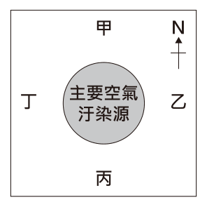
- （A）工業革命
- （B）宗教改革
- （C）啟蒙運動
- （D）文藝復興
答案：（A）
詳解與考點
正解：題幹出現以煤驅動蒸汽機、倫敦煤煙與城市空氣汙染，這些都是工業革命後大量燃煤和工業化的典型現象，因此A為正解。
B：宗教改革主要關於基督宗教教會與信仰改革，不能解釋蒸汽機燃煤造成的煙霧，錯誤。
C：啟蒙運動是理性、自由等思想潮流，非煤炭工業污染的直接成因，錯誤。
D：文藝復興著重古典文化與人文主義，比工業革命早，與題幹的蒸汽機和煤煙不符，錯誤。
本題考點：工業革命——看到蒸汽機、煤炭、工廠城市化等線索，應連結工業革命；工業化提高生產力，也可能帶來都市空氣汙染與健康問題。
第 53 題
圖(二十八)是文中國家某空氣汙染嚴重的城市示意圖。已知圖中某處為低技術勞動階級居住的區域，根據上文及考量盛行風向的影響，此處最可能位於圖中甲、乙、丙、丁何處？
- （A）甲
- （B）乙
- （C）丙
- （D）丁
答案：（B）
詳解與考點
正解：題幹指出西歐盛行風會把污染物吹向城市下風處；西歐位於西風帶，風向由西往東。圖中北朝上時，東側為乙，低技術勞動階級受工作與經濟限制而居住在污染最重的下風處，故B為正解。
A：甲位在北側，不是西風吹送污染物的主要下風方向，錯誤。
C：丙位在南側，也不是由西往東擴散的下風位置，錯誤。
D：丁在西側，屬上風處，空氣相對較佳；它看起來對，是因為同樣靠近城市，但污染判斷要先看風向，錯誤。
本題考點：盛行風與污染擴散——先判讀風從何方吹來，再找下風處；西風帶風向由西向東，污染源東側較易累積污染。
第 54 題
文中關於城市居民居住區域分布所呈現的問題，是下列何者的關懷重點？
- （A）社會主義
- （B）民族主義
- （C）帝國主義
- （D）法西斯主義
答案：（A）
詳解與考點
正解：題幹描述資本家與中產階級遷往污染較少處，低技術勞動階級卻被迫住在污染嚴重區，並引用恩格斯對勞工處境的不平，關鍵是階級不平等。社會主義關懷勞工與貧富差距，A為正解。
B：民族主義著重民族認同與國家建構，非勞工居住環境的不平等，錯誤。
C：帝國主義關於國家對外擴張與殖民支配，與題幹的都市階級問題不同，錯誤。
D：法西斯主義強調極權統治與民族至上，不能對應恩格斯的階級批判，錯誤。
本題考點：社會主義——看到勞工、資本家、貧富差距與階級剝削，應連結社會主義的關懷；思想流派判讀要以其核心問題，而非只看同時代背景判斷。
其他年度
回到國中教育會考社會的年度總覽，
或到國中教育會考題庫首頁看其他科目。
題目與標準答案出自心測中心 會考歷屆試題（依著作權法 §9，考試試題不受著作權保護）。依中華民國《著作權法》第 9 條第 1 項第 5 款，
依法令舉行之各類考試試題不得為著作權之標的，得自由利用。詳解為 AI 整理的學習輔助，
並非官方標準答案；中華民國會修訂，引用前請對照現行版本查證。